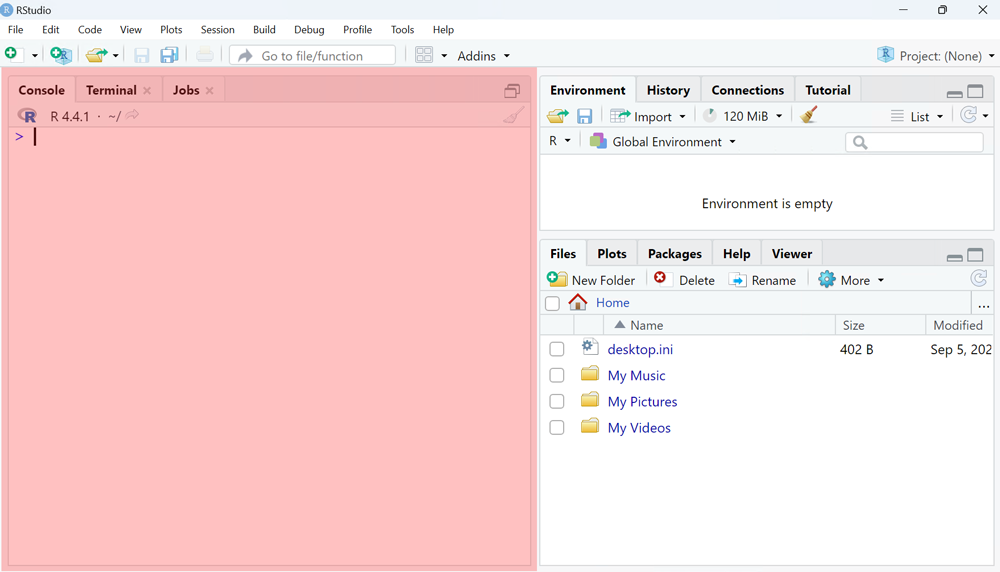
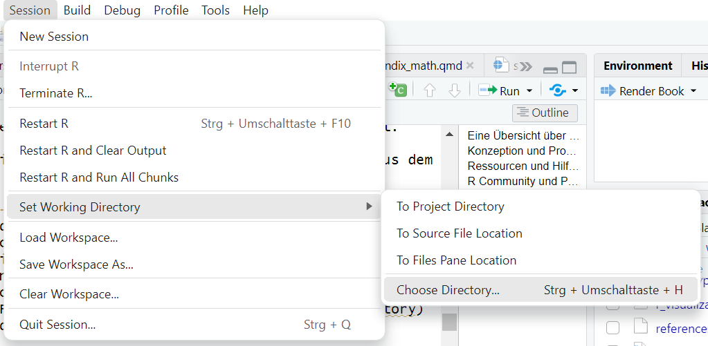
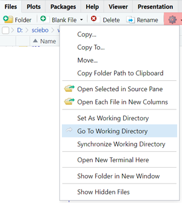
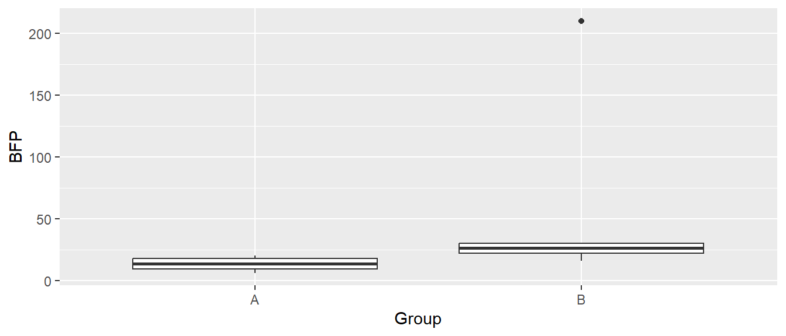
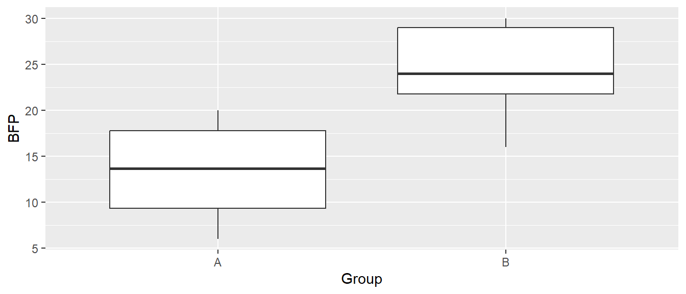

> install.packages("tidyverse")1 Eine Übersicht über R
1.1 Konzeption und Programmierparadigmen
Bei der Programmiersprache R handelt es sich um eine interpretierte Programmiersprache. Interpretiert bedeutet, dass R Programmierbefehle direkt ausführt, interpretiert. Dies steht im Gegensatz zu kompilierten Programmiersprachen (z.B. C++), bei denen gesamte Programm zunächst von einem Compiler in Maschinenbefehle übersetzt wird. Wenn eine Programmiersprache interpretiert wird, hat dies den Vorteil, dass die Arbeit besser interaktiv durchgeführt werden kann. D.h. als Anwenderin können, je nach Bedarf, einzelne Befehle oder größere zusammenhängende Befehle, an R übergeben werden und sie werden direkt ausgeführt und R liefert das Ergebnis zurück. Insbesondere bei der Datenverarbeitung vereinfacht diese Vorgehensweise die Arbeit ungemein. So können Daten per trial-and-error schnell angepasst, transformiert oder grafisch bzw. deskriptiv dargestellt werden. Dies macht den Umgang mit interpretierten Sprachen etwas intuitiver als mit kompilierten Programmiersprachen.
Der Hauptnachteil von interpretierten Programmiersprachen ist, dass durch die Abarbeitung der einzelnen Befehle bestimmte Optimierungen, um die Ausführungszeit zu verkürzen, nicht angewendet werden können. Dies hat zur Folge, dass die Ausführungszeit, d.h. die Zeit, die ein Programm benötigt, um seine Aufgaben zu erledigen, im Vergleich zu kompilierten Programmiersprachen zum Teil deutlich länger ausfallen kann. In R kann dieser Nachteil jedoch durch die Einbindung von bestimmten Paketen (was ein Paket ist, werden wir gleich sehen), die in anderen kompilierten Programmiersprachen erstellt und entsprechend optimiert wurden, in vielen Fällen umgangen werden. In vielen Fällen ist die Ausführungszeit aber tatsächlich eher zu vernachlässigen.
1.2 Ressourcen und Hilfestellungen zu R finden
War es in den Anfangszeiten von R noch teilweise schwierig, Hilfe bei auftretenden Problemen zu bekommen, hat sich dies in den letzten 10-15 Jahren glücklicherweise dramatisch geändert. Durch die etwas unglückliche Namensgebung R gab es beispielsweise zunächst Probleme bei der Suche nach Problemlösungen. Die Suchmaschinen konnten mit dem Buchstaben R wenig anfangen. Dies spielt aber heute keine Rolle mehr. Im Internet finden sich jetzt allerdings zahllose überaus aktive Communities rund um R mit Blogs, Podcasts, YouTube-Sammlungen und Programmierhilfen für alle möglichen Fragen und Probleme. Zwei sehr gute Quellen sind dabei Stack Overflow, bei denen oft schon mittels googeln sehr gute Treffer gefunden werden, oder ChatGPT bzw. Copilot. In RStudio besteht auch die Möglichkeit, Copilot direkt über GitHub zu integrieren.
Da R im wissenschaftlichen Umfeld sich sehr großer Beliebtheit erfreut, ist zudem die Menge an Büchern um und über R in den letzten Jahren geradezu explodiert. Mit eigenen Serien zur Datenanalyse mit R (Springer Use R!, CRC The R-Series) und zahllosen weiteren wissenschaftlichen Büchern mit mindestens Code-Beispielen in R bis hin zu frei verfügbaren Sammlungen hochqualitativer, wissenschaftlicher Bücher zu R (bookdown.org) lassen sich heutzutage relativ niedrigschwellig sehr gute R-Fertigkeiten aufbauen.
1.3 R Community und Pakete
Eine treibende Kraft bei der Weiterentwicklung und Weiterverbreitung von R ist die riesige Gemeinschaft von Anwenderinnen und Programmiererinnen. Dadurch, dass R im Kern eine vollständige Programmiersprache ist, kann die Funktionalität von R ständig erweitert und individuellen Bedürfnissen angepasst werden. Neue Funktionalität wird in R im Rahmen von sogenannten Paketen (alternativ Bibliotheken) gebündelt. Durch diese Pakete können neue Befehle durch neu definierte Funktionen in R zugänglich gemacht werden.
R Pakete werden über das Comprehensive R Archive Network (kurz CRAN) verteilt. CRAN ist ein internationales Netzwerk von Webservern, auf denen R Pakete gespeichert werden und das das einfache Herunterladen aus R heraus ermöglicht. Die auf CRAN gespeicherten Pakete folgen alle einer streng definierten Struktur und durchlaufen eine Qualitätskontrolle. Die Weiterentwicklung bzw. weitere Anpassung wird durch sogenannte Maintainer (Entwickler) sichergestellt. Während die Anzahl an Zusatzpaketen am Anfang von R noch relativ übersichtlich war, liegt die derzeitige Anzahl an R Paketen auf CRAN bei 19.900 (Stand 08.2023) mit Tendenz steigend. Da sich Datenanalysen über verschiedene Disziplinen und Anwendungsfälle im Grunde genommen immer wieder ähneln, besteht daher eine hohe Wahrscheinlichkeit, dass auch für ungewöhnliche Anwendungsfälle bereits bestehende Pakete und Zusatzfunktionen in R zur Verfügung stehen. Daher besteht für den Großteil von Anwenderinnen oftmals gar nicht mehr die Notwendigkeit, kompliziertere Programmieraufgaben selbst durchzuführen. Stattdessen, durch die Suche nach einem geeigneten Paket, können auftauchende Probleme schnell gelöst werden. Dies führt ebenfalls dazu, dass die Einstiegshürde für den Umgang mit R sehr niedrig ist. Da R mittlerweile zu den Top 20 der Programmiersprachen gehört, was relativ bemerkenswert für eine Spezialsprache ist, ist zudem die Investition in R-Kenntnisse heutzutage in jedem Fall positiv zu bewerten.
1.4 R und RStudio
Heutzutage wird R praktisch nur noch über die Entwicklungsumgebung RStudio verwendet. RStudio stellt dabei eine ganze Reihe von Werkzeugen zur Verfügung die den Umgang mit R deutlich vereinfachen. R tritt dann eigentlich nur noch im Hintergrund bei der Ausführung von Befehlen in Aktion. Vor allem der Editor um Skripte zu erstellen und die einfache Möglichkeit Projekte anzulegen vereinfachen die Arbeit mit R am Anfang doch deutlich.
Im Rahmen des vorliegenden Kurses werden wir entsprechend auch ausschließlich mit RStudio arbeiten und Vanilla-R ignorieren, bzw. wenn wir R schreiben, eigentlich immer RStudio meinen. Für euch ist es allerdings wichtig zu wissen, dass R installiert sein muss, damit RStudio auch wirklich funktionsfähig ist.
1.5 Weiterführendes
Die im weiteren Verlauf des Skripts kommenden Beispiele und Erklärungen dienen nur dazu, um einen allerersten Überblick über die Arbeit mit R zu gewinnen. D.h. die Inhalte beschränken sich auf die Konzepte, die für den Umgang mit R im späteren Verlauf dieses Statistikkurses benötigt werden. Wie schnell ersichtlich werden wird, besteht eine der Herausforderungen, den Umgang mit R zu erlernen, darin, die notwendigen Befehle und Funktionen zu kennen. Daher werden sich die ersten Schritte mit R ähnlich dem Erlernen einer neuen Sprache anfühlen. Das Schöne ist jedoch, R eignet sich hervorragend als erste Programmiersprache. In der heutigen Zeit in jedem Fall eine gute Investition in die eigene Zukunft.
Wer im weiteren Verlauf merkt, dass es ihr Spaß macht, mit R zu arbeiten, und gerne noch weitere Fertigkeiten für den Umgang mit R erlernen möchte, der findet mittlerweile zahlreiche sehr gute Quellen im Internet. Wer lieber etwas in der Hand haben möchte, für den Einstieg sind die beiden klassischen Bücher Chambers (2008) und Dalgaard (2008) empfehlenswert, von denen es auch immer günstige gebrauchte Versionen gibt. Etwas modernere Einführungen sind in Peng (2016) und Wickham, Çetinkaya-Rundel, und Grolemund (2023) zu finden, wobei es beide Bücher auch als freie Online-Versionen gibt (peng, wickham). Überhaupt eignet sich die Seite bookdown.org als gute Anlaufstelle für verregnete Tage am Schreibtisch.
1.6 Eine Beispielanalyse in R
Hinweis
Um das Beispiel auf dem eigenen Rechner nachzuvollziehen, müssen ein paar Pakete installiert werden. Wenn RStudio gestartet wird, dann sieht es normalerweise wie folgt aus.

Der rote Bereich wird als Kommandozeile bezeichnet. Dort werden die Anweisungen an R übergeben. Um die benötigten Pakete zu installieren muss auf der Kommandozeile der folgende Befehl eingegeben werden.
Danach laufen eine Reihe von automatischen Befehlen durch welche die benötigten Pakete installieren.
Im Folgenden wird ein etwas Beispiel mit nur kurzen Erklärungen exemplarisch vorgeführt, damit wir eine Vorstellung entwickeln wie die Arbeit mit R in einem konkreten Fall aussehen kann. Eingehende Erläuterungen zu den verwendeten Befehlen können in R mittels der Hilfedokumentation aufgerufen werden. Dazu wird lediglich ein ? vor den Funktionsnamen gestellt und R bzw. RStudio öffnet die zu der Funktion gehörende Hilfedatei. Soll zum Beispiel die Hilfedokumentation für die Funktion mean() aufgerufen werden.
> ?meanEs sei der folgende Datensatz aus Tabelle Tabelle 1.1 gegeben. In zwei unabhängigen Gruppen A und B wurde der Körperfettgehalt bestimmt. Nun soll untersucht werden, ob ein statistisch signifikanter Unterschied zwischen den beiden Gruppen besteht. Dies ist natürlich nur ein synthetisches Beispiel und sollte in dieser Form daher nicht im Rahmen einer tatsächlichen wissenschaftlichen Arbeit durchgeführt werden, sondern dient lediglich der Anschauung wie eine solche Analse in R durchgeführt werden könnte.
| Group | BFP |
|---|---|
| A | 13.3 |
| A | 6.0 |
| A | 20.0 |
| A | 8.0 |
| A | 14.0 |
| A | 19.0 |
| B | 22.0 |
| B | 16.0 |
| B | 21.7 |
| B | 210.0 |
| B | 30.0 |
| B | 26.0 |
| B | 30.0 |
Um eine Datenanalyse durchzuführen, müssen die Daten zunächst in R eingeladen werden. In der Rohform liegen die Daten in Form einer Textdatei vor. Die erste Spalte der Datei zeigt die Gruppenzugehörigkeit an, während die zweite Spalte den jeweiligen Fettgehalt beinhaltet. Die Spalten sind durch ein Komma voneinander getrennt und als Dezimaltrennzeichen, der internationalen Konvention folgend, wird ein Punkt verwendet.
Um die Daten in R zu laden wird eine spezielle Funktion aus dem Paket readr verwendet
Hinweis
Wenn R mit dem Betriebssystem interagiert, muss immer das sogenannte Arbeitsverzeichnis (working directory) im Auge behalten werden. Das Arbeitsverzeichnis bezeichnet das Verzeichnis, das R als sein Ausgangsverzeichnis betrachtet. Wenn eine Datei von dem Computer in R eingeladen werden soll, dann muss R in der Lage sein die Datei zu finden. D.h. der Pfad muss R bekannt sein. Die Pfadangaben sind entweder in Relation zum Arbeitsverzeichnis zu geben oder absolut. Das Arbeitsverzeichnis kann mit der Funktion setwd() (kurz für set working directory) verändert werden.
In RStudio kann das Arbeitsverzeichnis über den Menüeintrag Session/Set Working Directory/Choose Directory eingestellt werden (Keyboardkürzel: SHIFT+CTRL+hSHIFT+CTRL+h).
.
Die Datei sollte unten rechts im RStudio-Explorer sichtbar sein. Wenn die Datei nicht angezeigt wird, hilft meistens ein Refresh über das Zahnrad und Go To Working Directory.

Wenn die Datei nun im Explorer in RStudio zu sehen ist, dann muss der Dateiname nicht mehr mit einem Pfad qualifiziert werden.
Nun wird das Paket readr geladen in dem zahlreiche Funktionen zum einlesen verschiedener Dateiarten hinterlegt sind. Wir laden die Datei mittels der Funktion read_csv() ein. read_csv() ist spezialisiert auf das Einlesen von Komma-separierten Textfiles (comma-separated-values: csv).
> library(readr)
> bfp <- read_csv(file = 'bfp_data.txt')
> bfpDie Daten stehen nun unter dem Bezeichner bfp in R zur Verfügung. Der Name ist dabei wieder willkürlich gewählt und der Einfachheit halber kurz gehalten.
Tipp
Die Datei kann unter folgendem Link heruntergeladen werden.
Die Daten sind in einem sogenannten data.frame-Objekt (bzw. der neueren Version tibble) abgelegt und können nun weiterverarbeitet werden. Beispielsweise kann mittels der Funktion summary() ein Überblick über die deskriptiven Statistiken der Daten erzeugt werden.
> summary(bfp) Group BFP
Length:13 Min. : 6.00
Class :character 1st Qu.: 14.00
Mode :character Median : 20.00
Mean : 33.54
3rd Qu.: 26.00
Max. :210.00 Hier ist bereits zu sehen, dass einer der Datenpunkte wahrscheinlich fehlerhaft ist, da der Wert \(>100\) ist, was bei für einen prozentualen Körperfettanteil nicht möglich ist. Im nächsten Schritt sollen die Daten dann grafisch mittels eines Boxplots dargestellt werden. R stellt von Haus aus zahlreiche Funktionen zur einfachen graphischen Darstellung bereit. Wir wollen hier aber auf das Paket ggplot2 zurückgreifen, welches die Erstellung moderner Grafiken in Publikationsqualität ermöglicht (Wickham 2009). Vor der Verwendung muss das Paket ggplot2 wiederum zunächst geladen werden.
> library(ggplot2)
> ggplot(bfp, aes(Group, BFP)) + geom_boxplot()

Im Boxplot in Abbildung Abbildung 1.1 ist der problematische Datenpunkt noch klarer ersichtlich und er verhindert gleichzeitig eine Analyse der Daten. Da wir keine weitere Information haben, durch welchen Wert wir den fehlerhaften Wert ersetzen könnten, schließen wir den Datenpunkt der Einfachheit halber aus. Dazu benutzen wir aus dem Paket dplyr die Funktion filter().
> library(dplyr)
> bfp_clean <- filter(bfp, BFP <= 100)
> bfp_clean# A tibble: 12 × 2
Group BFP
<chr> <dbl>
1 A 13.3
2 A 6
3 A 20
4 A 8
5 A 14
6 A 19
7 B 22
8 B 16
9 B 21.7
10 B 30
11 B 26
12 B 30 > ggplot(bfp_clean, aes(Group, BFP)) + geom_boxplot()

Die grafische Darstellung mittels eines Boxplots ist jetzt schon deutlich aussagekräftiger (siehe Abbildung Abbildung 1.2). Ohne jetzt weiter auf statistische Voraussetzungen einzugehen, führen wir einen unabhängigen t-Test für Gruppen mit unterschiedlichen Varianzen durch. Dazu benutzen wir wieder eine Funktion aus R.
> t.test(BFP ~ Group, data = bfp_clean)
Welch Two Sample t-test
data: BFP by Group
t = -3.4017, df = 9.9886, p-value = 0.006762
alternative hypothesis: true difference in means between group A and group B is not equal to 0
95 percent confidence interval:
-18.040619 -3.759381
sample estimates:
mean in group A mean in group B
13.38333 24.28333 Wie dieses Beispiel zeigt, lässt sich in R mittels weniger Befehle eine Datenanalyse realisieren. Die Entwickler von R haben dabei darauf geachtet, dass die Namensgebung von Funktionen möglichst nahe an der gewünschten Tätigkeit liegt, sodass der englische Begriff meist schnell die Funktion herleiten lässt. Im Beispiel haben wir alle Befehle direkt auf der Kommandozeile eingegeben und die Daten interaktiv analysiert. Bei einer tatsächlichen Analyse wird die Datenanalyse aus einer Kombination von interaktivem Arbeiten und permanenten Skripten bestehen. Beispielsweise würden diejenigen finalen Befehle, die auf die Daten angewendet werden sollen, in eine Skriptdatei geschrieben werden. Eine Skriptdatei ist dabei nichts anderes als eine Textdatei, in der die notwendigen Anweisungen für R nacheinander stehen. Dies stellt sicher, dass die Analyse zu einem späteren Zeitpunkt wieder aufgegriffen bzw. später auch nachvollzogen werden kann. So könnte der gezeigte Beispiel-Workflow in das folgende Skript münden:
# Notwendige Bibliotheken
library(readr)
library(ggplot2)
library(dplyr)
# Daten einlesen
bfp <- read_csv(file = 'bfp_data.txt')
# Daten bearbeiten
bfp_clean <- filter(bfp, BFP <= 100)
# Deskriptiv
summary(bfp_clean)
# Graphiken
ggplot(bfp_clean, aes(Group, BFP)) + geom_boxplot()
# Analyse
t.test(BFP~Group, data = bfp_clean)Die Abfolge der Befehle in dem Skript sind durch die Verwendung von Kommentaren, die in R mit einem # signalisiert werden, noch besser nachvollziehbar. Dieses Skript könnte zusammen mit den Daten abgespeichert werden und bleibt dann ausführbar.